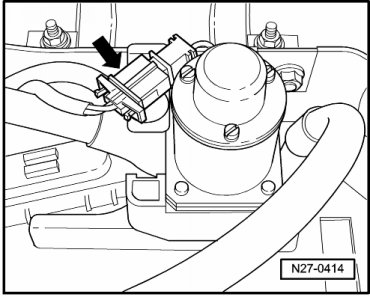
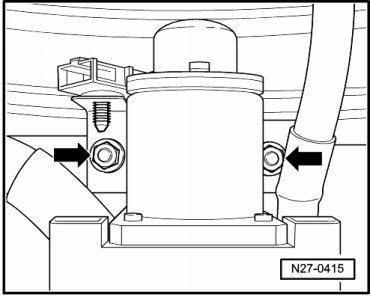
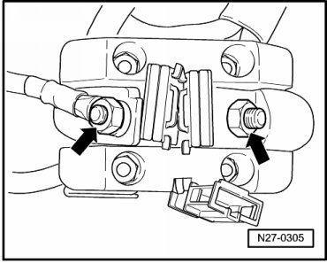

Battery Cut-Off Relay
Battery Cut-Off Relay
Special tools, testers and auxiliary items required
• Torque Wrench (V.A.G 1331/)
Removing
- Disconnect batteries --> [ Battery, One-Battery Layout, Disconnecting and Connecting ] Battery, One-Battery Layout, Disconnecting and Connecting.
- Remove second battery in luggage compartment --> [ Battery in Luggage Compartment ] Battery in Luggage Compartment.
- Disconnect battery isolator connection - arrow -.

- Remove nuts - arrows - and remove battery isolator upward from retainer.

- Remove nuts - arrows -.
- Disconnect wires from battery isolator.

Installing
Install in reverse order of removal, noting the following:
- Tighten the battery cut-off relay nuts and the lines to the specification --> [ Battery ] Battery.
- Install battery in luggage compartment --> [ Second Battery or Auxiliary Battery in Luggage Compartment, Connecting ] Battery, with Auxiliary Battery or Two-Battery Layout, Disconnecting and Connecting.
CAUTION!
• When connecting battery, always perform work procedure as described in repair information --> [ Battery, with Auxiliary Battery or Two-Battery Layout, Disconnecting and Connecting ] Battery, with Auxiliary Battery or Two-Battery Layout, Disconnecting and Connecting. Not adhering to sequence will result in the deactivation of Main Battery Switch -E74- and subsequent damage to electrical system components.
• Observe notes for threaded connections of battery terminals --> [ Battery Post/Terminal ] Battery Post/Terminal.
- Reconnect battery --> [ Battery, One-Battery Layout, Disconnecting and Connecting ] Battery, One-Battery Layout, Disconnecting and Connecting.